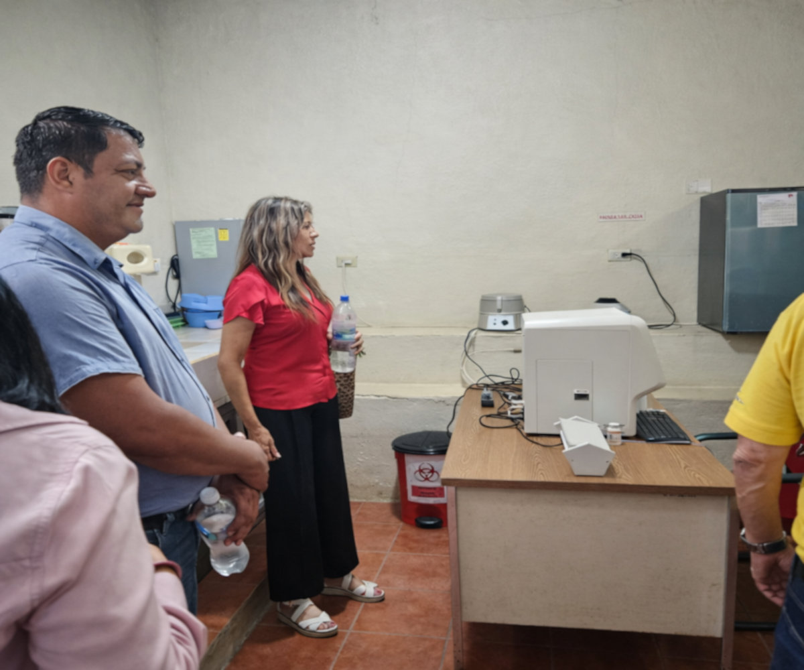
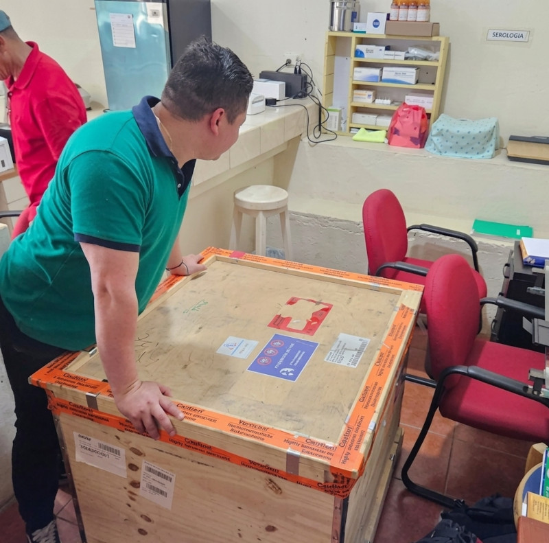
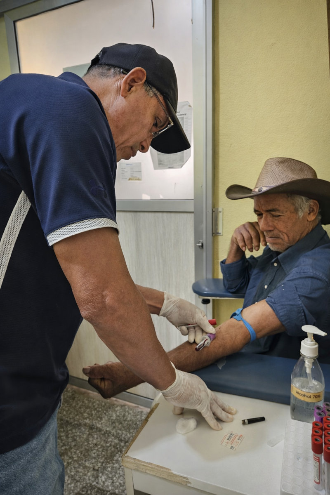
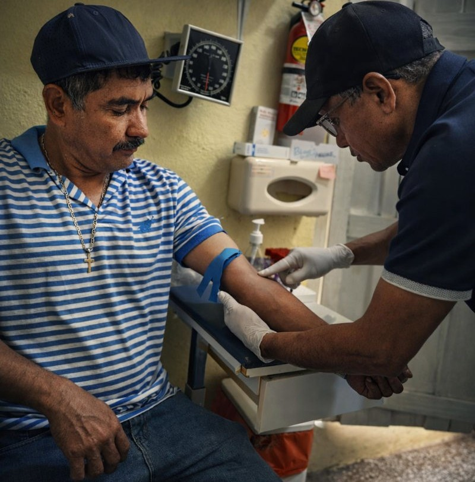
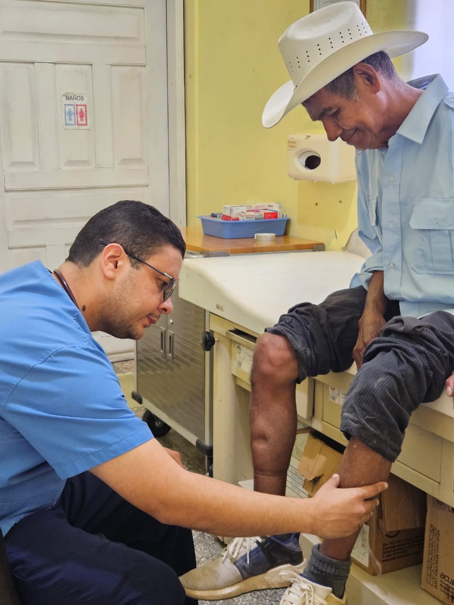
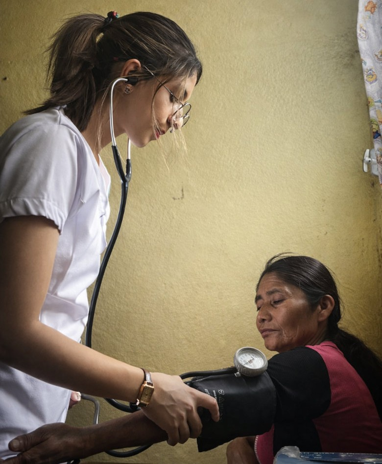
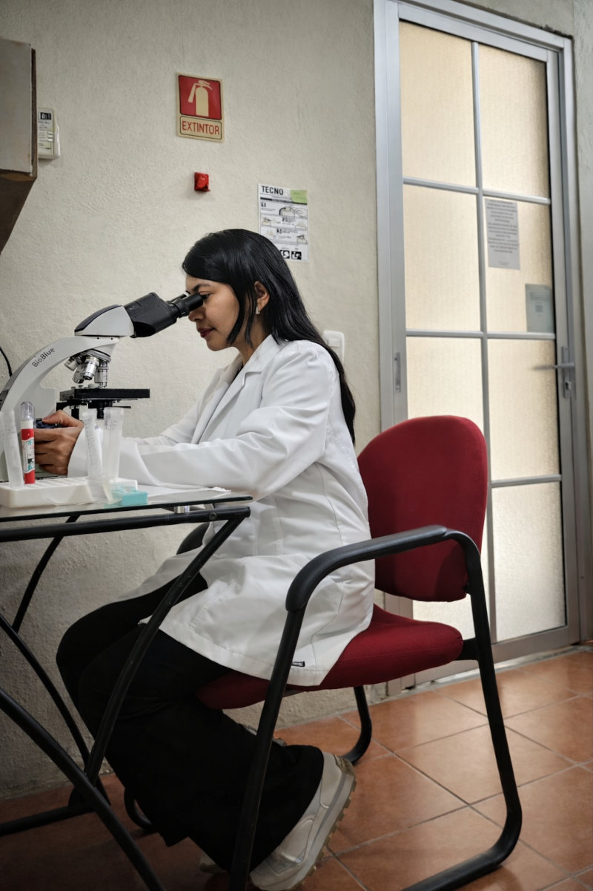

Galería de Fotos
Imágenes del trabajo, la atención y los espacios del Proyecto San Francisco de Asís.








Salud y servicio para la comunidad
Imágenes del trabajo, la atención y los espacios del Proyecto San Francisco de Asís.






